Tracefolio REPORTS & ISSUES
Tracefolio REPORTS & ISSUESPixel Foliage 11개 씬 실제 실행 GIF
검증 대기독립 예제10개와 Pixel Camera 연동1개를 실제 Unity에서 촬영했습니다. ScreenToGif로 씬별 GIF와 정지 원본을 첨부했습니다.
작업 결과
11개 씬의 실제 실행 화면을 촬영했습니다. 아래 GIF는 생성 이미지가 아니라 Unity가 렌더링한 프레임입니다. 기존 구현 보고의 화면 미확보 상태를 이번 촬영 근거로 보완합니다.
01-MeadowBreeze · 초원과 꽃 포인트
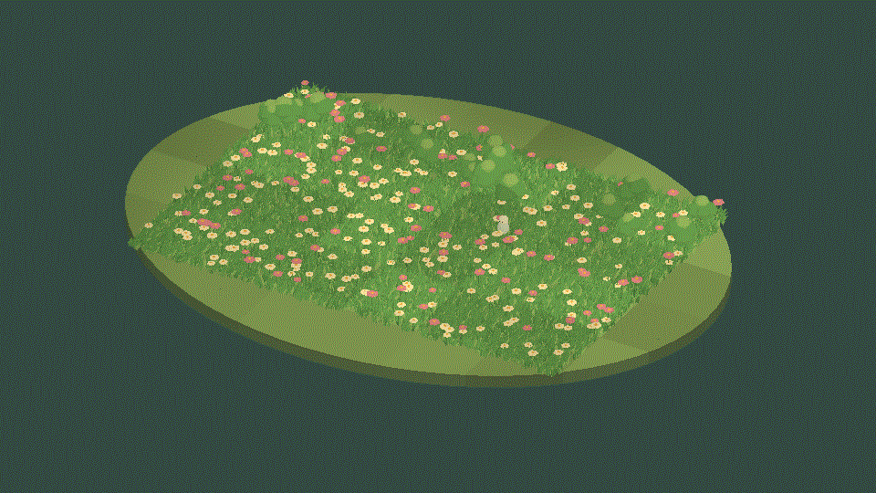
같은 씬 정지 원본 · 960×540 · 24프레임 · 3.48MB

02-BlossomWalk · 꽃밭과 비워 둔 산책길
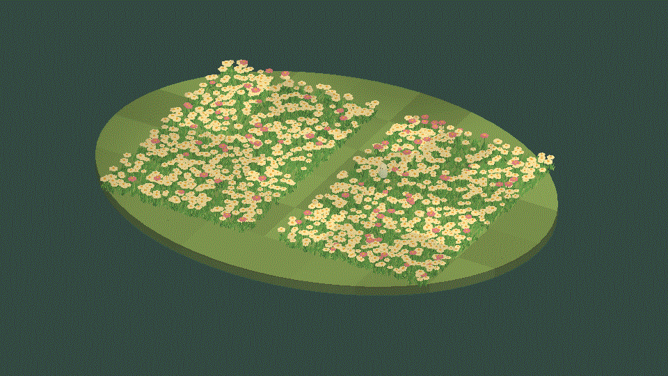
같은 씬 정지 원본 · 960×540 · 24프레임 · 3.67MB

03-ShrubGarden · 관목과 하층 잔디
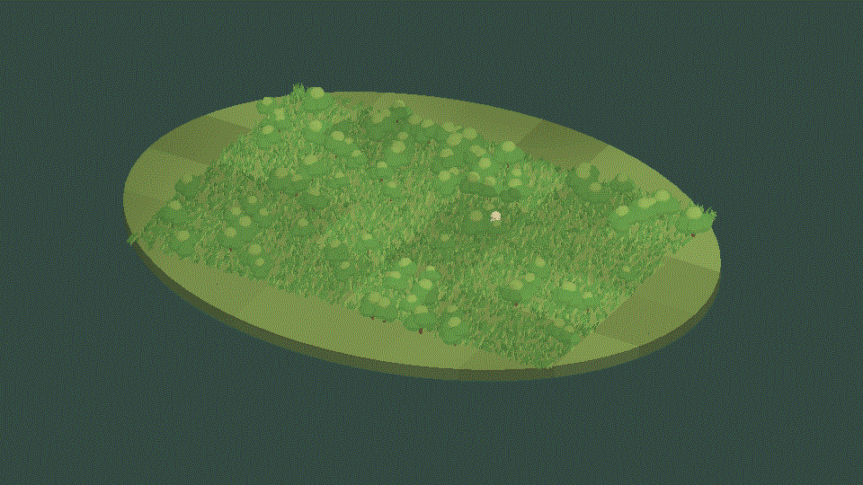
같은 씬 정지 원본 · 960×540 · 24프레임 · 3.35MB

04-YoungWoodland · 나무와 수관·하층 식생
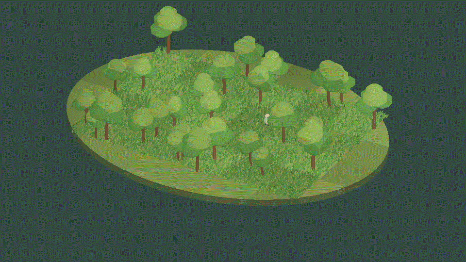
같은 씬 정지 원본 · 960×540 · 24프레임 · 3.48MB

05-ContactTrail · 방문자가 이동하는 접촉 예제
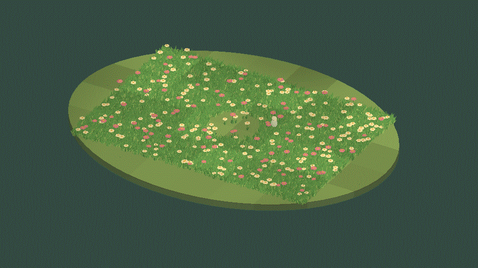
같은 씬 정지 원본 · 960×540 · 24프레임 · 3.49MB

06-SteppedRhythm · 4개 잔디 구역의 단계별 시간 예제
같은 씬 정지 원본 · 960×540 · 24프레임 · 3.26MB

07-SharedGusts · 여러 식생의 공통 돌풍 예제
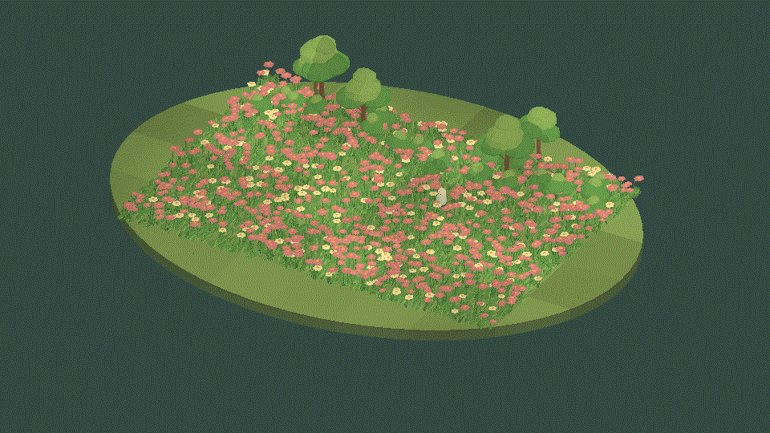
같은 씬 정지 원본 · 960×540 · 24프레임 · 3.70MB

08-CloudLight · 구름 명암을 공유하는 초원
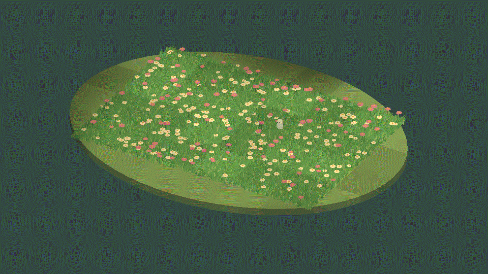
같은 씬 정지 원본 · 960×540 · 24프레임 · 3.49MB

09-MixedGarden · 잔디·꽃·관목·나무 종합 정원
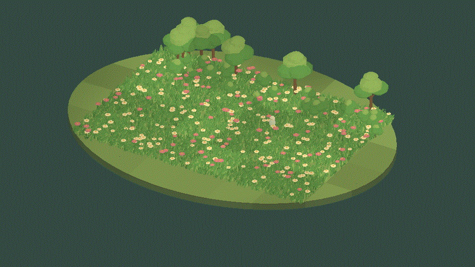
같은 씬 정지 원본 · 960×540 · 24프레임 · 3.60MB

10-ExtensionGrove · 나무 배치를 확장한 숲
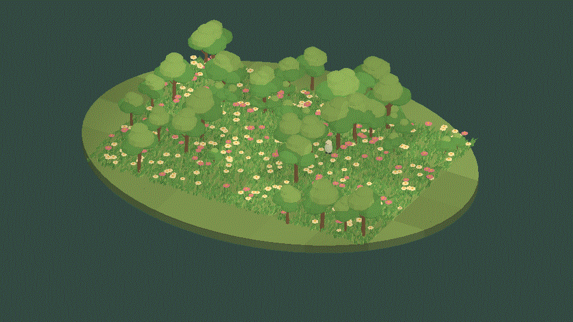
같은 씬 정지 원본 · 960×540 · 24프레임 · 3.56MB

11-PixelCameraGarden · Pixel Camera 픽셀 출력 연동
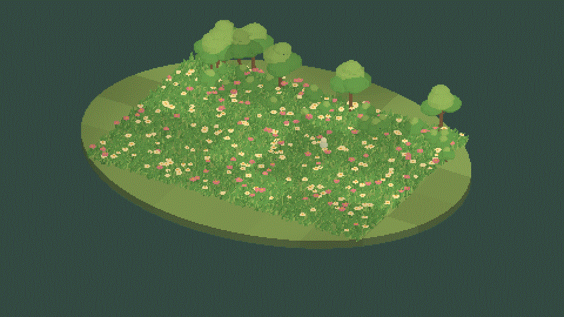
같은 씬 정지 원본 · 960×540 · 24프레임 · 3.59MB

변경 내용
적용 내용
이전 구현 보고서를 보존한 후속 버전입니다.
첫 실행에서 식생이 자홍색으로 표시되어 재질의 m_Shader 참조를 확인했습니다. 같은 Shader GUID를 가리키는 직렬화 참조가 type: 2여서 type: 3으로 수정하고 생성 도구도 함께 수정했습니다. 수정 후 전 씬을 재촬영했으며 재발 방지 정적 검사를 추가했습니다.
960×540 출력과 원본 프레임을 유지했습니다. 정지 PNG는 편집 없이 보존했습니다. 일부 PNG는200KB 목표를 조금 넘지만 작은 식생의 확인을 위해 원본을 유지했습니다. GIF는24프레임의 짧은 루프로 구성했습니다.
재질 참조 수정 전후 · 같은01번 씬
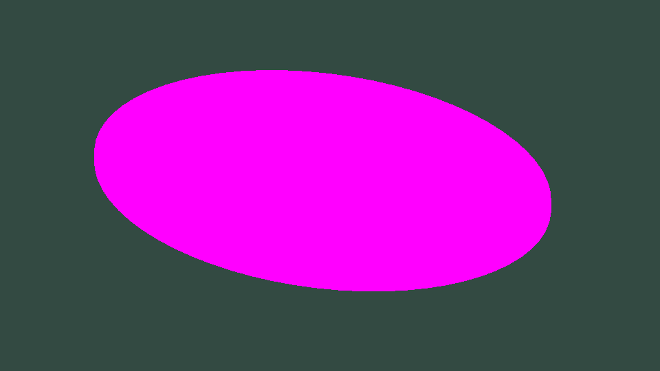
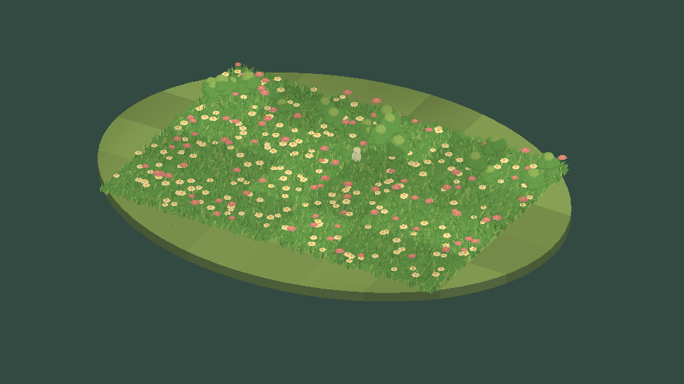
같은 씬·카메라·출력 크기입니다. 별도 실행이므로 방문자 위치와 바람 시간은 다릅니다.
검증
Unity6000.0.83f1·Windows DX11·Built-in에서 별도 검증 프로젝트에 같은 Runtime/샘플 소스를 복사해11개 씬 Play와 촬영을 수행했습니다. 사용자 프로젝트의 활성 씬과 빌드 설정은 변경하지 않았습니다.
11개 정지 화면을 직접 확인했고 GIF 전부960×540·24프레임·서로 다른24프레임으로 디코딩됨을 확인했습니다. GIF의 약5fps 촬영 간격은 제품 성능 측정값이 아닙니다. 따라서06번의0·3·5·8fps 설정 차이를 정밀 비교하는 고속 촬영으로 보시면 안 됩니다.
사용자가 지정한 설치 ScreenToGif2.43.2의 실제 GifEncoder API로 원본 PNG를 GIF로 묶었습니다. FFmpeg는 사용하지 않았습니다. 인코더·파일 해시, 프레임 검증을 보존했습니다.
씬11은 Camera가 적용된 픽셀 출력의 실제 촬영입니다. 별도 URP·HDRP·모바일·출시 패키지 설치 검증을 뜻하지 않습니다.
남은 사항
이번 요청 범위인11개 씬 촬영과 보고서 첨부를 처리했습니다. 제품 전체의9언어 UI 전환, 표면 배치 Undo/Redo, 네이티브 패키지 설치, 성능 프로파일링, 자체 로고 제작, 공식 판매 검증은 별도 남은 작업입니다.
교훈 검토: 정적 컴파일로 확인되지 않는 재질 참조 오류를 실제 Play로 확인해 수정했습니다. 기존 실행 검증 규칙과 중복되므로 전역 지침 변경 없음. 프로젝트 생성 도구와 회귀 검사에 반영했습니다.
작업 시간
- 제안 시간: 20~40분
- 실제로 완료된 시간: 시작2026-11-03 22:04:01 KST.11개 씬 재촬영 완료22:14:24 KST, ScreenToGif 인코딩22:17:36 KST. 공개 배포 검증은 후속 메뉴얼에 실제 완료 시각을 기록합니다.
- XERJ: 미사용 — 촬영 중심 작업. 수정한 재질·생성 도구는 프로젝트 XERJ의 Editor 인덱스 범위 밖이므로 현재 파일과 실제 실행을 직접 대조했습니다.